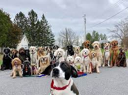

Blog de razas de Perros
Los perros se caracterizan por esto: * Ser muy afectuosos con los humanos. * Tener un sentido del olfato muy agudo. * Tener un amplio espectro auditivo. * Ser capaces de detectar el movimiento y la luz a la distancia. * Tener una piel externa que se renueva de manera periódica. * Los perros son seres sociables y viven en manada con otros perros o con humanos.
Suelen vivir unos 13 o 15 años y, algunos como los de raza pequeña, llegan a los 17 años. La calidad de vida, tanto por la alimentación como por los cuidados de su salud, es un factor de influencia para la expectativa de vida. Los perros machos suelen dejar rastros de orina cuando pasean por lugares ajenos a su hogar, para reconocer el camino a la vuelta. También lo hacen para delimitar su territorio ante otros perros.
Principales razas de Perros en México:
- Labrador
- Pugs
- Schnauzer
- Husky Siberiano
- Pastor Alemán
- Chihuahua
- Pitbull
Aquí podrás encontrar las características de estas razas de perros.
link: Características de razas de perros
Según la Federación Canófila Mexicana (FCM), actualmente perduran 3 razas de perros mexicanos (existían originalmente 4 razas mexicanas), de las cuales aún podemos encontrar ejemplares vivos, pero en la antigüedad existían un poco más. A continuación, te las presentamos:
1.- Perro Xoloitzcuintle
Una raza de perros representativa de México es la Xoloitzcuintle. La principal característica que marca la diferencia entre este perro del resto de las razas es la falta de pelo en la mayoría de su cuerpo. Sin embargo, hay distintas variedades que pueden tener más o menos pelo en diferentes zonas.
Su tamaño es mediano, su temperamento lo hace ser sociable y es un perro de compañía y protección, prácticamente como cualquier otro. En el pasado también cumplía un papel importante dentro de la religión prehispánica, ya que la relación de los humanos con ellos perduraba incluso después de la muerte.
El Xoloitzcuintle en el México prehispánico
Según las creencias de la antigua cultura mexica, la persona fallecida debía cumplir un recorrido para llegar a la tierra de los muertos (Mictlán o Inframundo); se encontraría con un río difícil de cruzar, y ahí es dónde su querido compañero de cuatro patas estaría esperándolo para ayudarlo a cruzar y llegar a la tierra de los muertos.
El nombre de la raza, difícil de pronunciar, está conformado por términos aztecas que significan "perro del dios Xólotl", el señor de la vida y la muerte que, según las leyendas, fue quien envió a estos perros inusuales a la tierra para que se convirtieran en protectores de las personas, y después de su muerte, los condujeran a las puertas del más allá. El procedimiento funerario terminó con la matanza del xolo y el ritual de comer su carne.
Por supuesto, hoy en día tal evento es algo desalentador, pero también confirma que para las personas del México prehispánico, los xolos eran animales sagrados, un regalo de Dios. Actualmente, los representantes de esta raza se clasifican como tesoros nacionales.
Por este y otros motivos, el Xoloitzcuintle es considerado más que un perro, sino un auténtico animal sagrado en México y otros países de América Latina.
2.- Perro Techichi
Esta es una raza actualmente extinta, aunque se sabe que es un ancestro directo del perro Chihuahueño, su apariencia era muy similar a los ejemplares de la raza actual, pero con un pelaje más largo y una columna más alargada. En comportamiento eran muy tranquilos y dóciles. Se consideraban perros de compañía y se cree que fueron utilizados para trabajos ligeros.
¿Su evolución al chihuahueño? El perro Techichi era considerado un compañero espiritual, sobre todo por la cultura tolteca. Su paso por la cultura prehispánica ha quedado plasmada en un buen número de figuras de arcilla que lo representan muy parecido a los perritos chihuahueños.
3.- Perro Chihuahueño
Esta es la raza más pequeña no sólo de México si no de América y el mundo. También llamado perro chihuahua es una raza peculiar con apariencia tierna y grandes ojos respecto a su cabeza, cuerpo frágil y trémulo, y el gran vínculo que llegan a crear con su amo lo han llevado a tener una gran popularidad alrededor del mundo entero.

4.- Perro Calupoh o Perro Lobo Mexicano
El perro Calupoh es la raza más desconocida de todas las aquí mencionadas. Aunque su origen no es reciente, se han encontrado vestigios de esta raza en Teotihuacán. No es común ver uno en la calle o tener a algún conocido que posea un ejemplar: la razón de esto se debe a que es una raza que se ha recuperado recientemente y se puede considerar como un híbrido entre un perro y el lobo gris.
Su origen se dio de forma natural como resultado de la cruza entre lobos y perros que compartían un territorio. Es el perro más grande de las tres razas mexicanas que actualmente existen con un tamaño que alcanza hasta los 75 cm y un pelaje negro que le da cierto parecido al de los lobos. Su carácter es dócil convirtiéndolo en un perro de compañía.